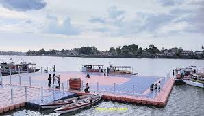

Sipin Lake
Danau Sipin, yang terletak di Kecamatan Telanaipura, Kota Jambi, merupakan destinasi wisata populer hanya sekitar 5 km dari pusat kota dan menawarkan beragam kegiatan menarik untuk semua kalangan. Danau seluas kurang lebih 89 hektar ini dihiasi keramba jaring apung dan tangkul bambu tradisional, sehingga pengunjung bisa berkeliling naik perahu dayung maupun perahu bebek, memancing, hingga mencicipi kuliner khas di kafe dan warung tepi danau sembari menikmati matahari terbenam. Selain itu, Danau Sipin dilengkapi fasilitas seperti taman, musala, area parkir, dan sering menjadi lokasi festival perahu hias, lomba layang-layang, pameran UMKM, hingga pertunjukan seni dan paket belajar membatik khas Jambi. Dengan harga tiket masuk gratis dan biaya parkir terjangkau, Danau Sipin menawarkan perpaduan wisata alam, budaya, edukasi, dan rekreasi yang membuatnya cocok untuk dikunjungi bersama keluarga maupun wisatawan dari luar kota.